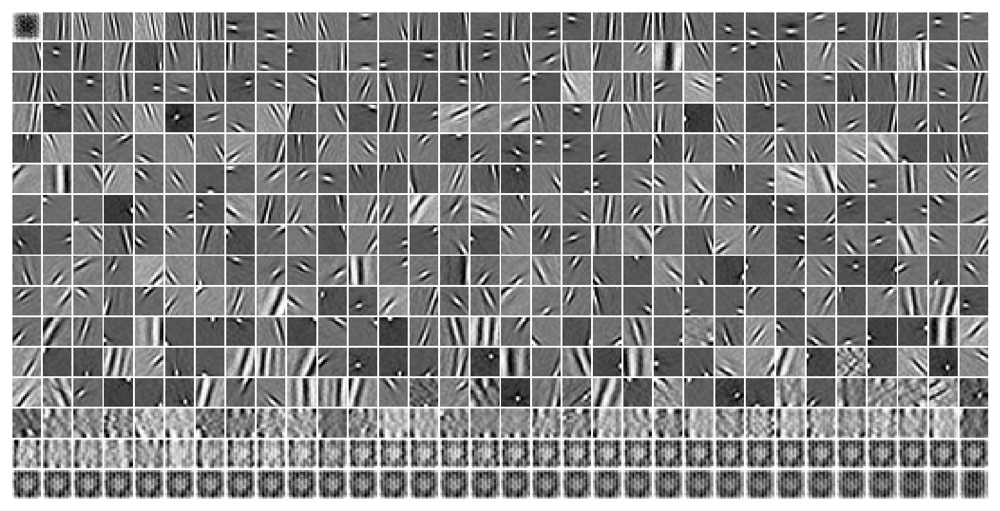
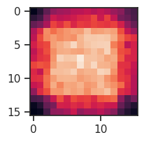
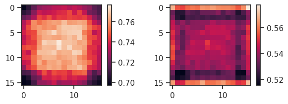
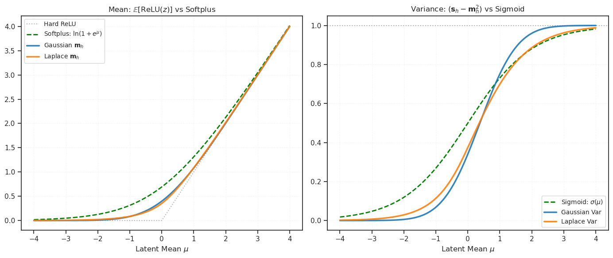

tmp — feb26#
Motivation: scratch notebook
device_idx = 1
device = f'cuda:{device_idx}'
print(f"device: {device} ——— host: {os.uname().nodename}")
device: cuda:1 ——— host: chewie
from mcfe.main.conv_dictionary import conv_arithmetic
df = conv_arithmetic(
deconv=True,
input_size=3,
output_size=32,
# kernel_size=None,
stride=6,
padding=0,
output_padding=0,
)
df
| mode | computed | parameter | value | |
|---|---|---|---|---|
| 0 | deconv | False | input_size | 3 |
| 1 | deconv | False | output_size | 32 |
| 2 | deconv | True | kernel_size | 20 |
| 3 | deconv | False | stride | 6 |
| 4 | deconv | False | padding | 0 |
| 5 | deconv | False | output_padding | 0 |
print(df.to_string(index=False))
mode computed parameter value deconv False input_size 3 deconv False output_size 32 deconv True kernel_size 20 deconv False stride 6 deconv False padding 0 deconv False output_padding 0
df.loc[df['computed']]
| mode | computed | parameter | value | |
|---|---|---|---|---|
| 2 | deconv | True | kernel_size | 20 |
from mcfe.main.load_model import load_model
tr, meta = load_model('pal-lab/MCFE/ux3zvv94', verbose=True)
Path 'pal-lab/MCFE/ux3zvv94' matches WandB format. Fetching config...
# params: 262.9 K
Successfully loaded model from /home/hadi/Projects/MCFE/checkpoints/pois_vH16-wht_kms-(512,1,1)/b(1000)-ep(3000)-lr(0.001)_betas(kl-1,recon-1)/202 6_02_25,20:15
Checkpoint File: PoissonVAE+Trainer-3000_(2026_02_25,20:49).pt
tr.model.dec.weight.data.shape
torch.Size([512, 1, 16, 16])
tr.model.show();

dec_sigma = tonp(tr.model.get_dec_log_sigma().squeeze().exp())
var_learned = dec_sigma ** 2
var_data = torch.var(tr.dl_trn.dataset.tensors[0], dim=0).squeeze()
var_data.shape
torch.Size([16, 16])
imshow(var_data.squeeze())
<matplotlib.image.AxesImage at 0x70912f75f3d0>

fig, axes = create_figure(1, 2)
im = axes[0].imshow(tonp(var_data))
plt.colorbar(im, ax=axes[0])
im = axes[1].imshow(tonp(var_learned))
plt.colorbar(im, ax=axes[1])
plt.show()

var_data = torch.var(tr.dl_trn.dataset.tensors[0], dim=0, keepdims=True)
var_data.shape
torch.Size([1, 1, 16, 16])
tr.model.dec_log_sigma.data = var_data
def compute_n_exp(rate: float, p: float = 1e-6):
assert rate > 0.0, f"must be positive, got: {rate}"
pois = sp_stats.poisson(rate)
n_exp = pois.ppf(1.0 - p)
return int(n_exp)
compute_n_exp(0.1, 1e-3)
2
%timeit compute_n_exp(100, 1e-3)
546 μs ± 64.5 μs per loop (mean ± std. dev. of 7 runs, 1,000 loops each)
from math import ceil, sqrt
from scipy.stats import norm
# precompute once
_Z = {p: norm.ppf(1.0 - p) for p in [1e-4, 1e-6, 1e-8]}
def compute_n_exp(rate: float, p: float = 1e-6):
z = _Z.get(p) or norm.ppf(1.0 - p)
return int(ceil(rate + z * sqrt(rate)))
compute_n_exp(0.1, 1e-3)
2
%timeit compute_n_exp(100, 1e-3)
81.7 μs ± 13 μs per loop (mean ± std. dev. of 7 runs, 10,000 loops each)
a = torch.randn(123, 512)
du = torch.chunk(a, chunks=2, dim=1)
len(du), du[0].shape
(2, torch.Size([123, 256]))
fig, axes = create_figure(1, 1, reshape=True)
axes[0, 0]
<Axes: >
def linear_anneal(
n_iters: int,
val_stop: float,
val_start: float,
anneal_portion: float = 0.3,
constant_portion: float = 0, ):
values = np.ones(n_iters) * val_stop
a = int(np.ceil(constant_portion * n_iters))
b = int(np.ceil((constant_portion + anneal_portion) * n_iters))
values[:a] = val_start
values[a:b] = np.linspace(val_start, val_stop, b - a)
return values
vals = linear_anneal(n_iters=1000, val_stop=0.05, val_start=1.0, anneal_portion=-0.4, constant_portion=0.0)
plot(vals)
plt.show()
---------------------------------------------------------------------------
ValueError Traceback (most recent call last)
Cell In[16], line 1
----> 1 vals = linear_anneal(n_iters=1000, val_stop=0.05, val_start=1.0, anneal_portion=-0.4, constant_portion=0.0)
2 plot(vals)
3 plt.show()
Cell In[9], line 11, in linear_anneal(n_iters, val_stop, val_start, anneal_portion, constant_portion)
9 b = int(np.ceil((constant_portion + anneal_portion) * n_iters))
10 values[:a] = val_start
---> 11 values[a:b] = np.linspace(val_start, val_stop, b - a)
12 return values
File ~/anaconda3/lib/python3.11/site-packages/numpy/core/function_base.py:124, in linspace(start, stop, num, endpoint, retstep, dtype, axis)
122 num = operator.index(num)
123 if num < 0:
--> 124 raise ValueError("Number of samples, %s, must be non-negative." % num)
125 div = (num - 1) if endpoint else num
127 # Convert float/complex array scalars to float, gh-3504
128 # and make sure one can use variables that have an __array_interface__, gh-6634
ValueError: Number of samples, -400, must be non-negative.
COLORMAPS = {
'EAT_sigmoid': 'C0',
'EAT_cubic': 'C3',
'Gumbel-Softmax': 'C2',
'Exact': 'k',
'Score': 'C7',
'OVIS': 'C4',
}
fig, ax = plt.subplots(figsize=(6.6, 2))
for i, (name, color) in enumerate(COLORMAPS.items()):
ax.scatter(i, 0, color=color, s=700)
ax.text(i, -0.2, name, ha='center', va='top', fontsize=10)
ax.set_ylim(-0.5, 0.5)
ax.axis('off')
plt.tight_layout()
plt.show()

import numpy as np
import matplotlib.pyplot as plt
from scipy.stats import norm
def get_gaussian_rectified_moments(mu, sigma):
zeta = mu / sigma
phi_z = norm.pdf(zeta)
Phi_z = norm.cdf(zeta)
# m_h = E[ReLU(z)]
m_h = mu * Phi_z + sigma * phi_z
# s_h = E[ReLU(z)^2]
s_h = (mu**2 + sigma**2) * Phi_z + mu * sigma * phi_z
return m_h, s_h
def get_laplace_rectified_moments(mu, b):
m_h = np.zeros_like(mu)
s_h = np.zeros_like(mu)
mask_neg = mu < 0
mask_pos = mu >= 0
# Case mu < 0
if np.any(mask_neg):
mu_neg = mu[mask_neg]
exp_term = np.exp(mu_neg / b)
m_h[mask_neg] = (b / 2) * exp_term
s_h[mask_neg] = (b**2) * exp_term
# Case mu >= 0
if np.any(mask_pos):
mu_pos = mu[mask_pos]
exp_term = np.exp(-mu_pos / b)
m_h[mask_pos] = mu_pos + (b / 2) * exp_term
s_h[mask_pos] = mu_pos**2 + 2*(b**2) - (b**2) * exp_term
return m_h, s_h
# --- Setup ---
mu_range = np.linspace(-4, 4, 500)
FIXED_VAR = 1.0
sigma = np.sqrt(FIXED_VAR)
b = np.sqrt(FIXED_VAR / 2) # approx 0.707
# --- Compute Moments ---
g_m, g_s = get_gaussian_rectified_moments(mu_range, sigma)
g_var = g_s - g_m**2
l_m, l_s = get_laplace_rectified_moments(mu_range, b)
l_var = l_s - l_m**2
# --- Compute Reference Functions ---
# Standard Softplus: ln(1 + e^x)
softplus = np.log1p(np.exp(mu_range))
# Standard Sigmoid: 1 / (1 + e^-x)
sigmoid = 1 / (1 + np.exp(-mu_range))
# Gaussian CDF (Phi) for comparison
gaussian_cdf = norm.cdf(mu_range)
# --- Plotting ---
plt.figure(figsize=(14, 6))
# ----------------------------------------
# Plot 1: The Rectified Mean vs Softplus
# ----------------------------------------
plt.subplot(1, 2, 1)
# References
plt.plot(mu_range, np.maximum(0, mu_range), 'k:', alpha=0.3, label='Hard ReLU')
plt.plot(mu_range, softplus, 'g--', linewidth=2, label='Softplus: $\ln(1+e^\mu)$')
# Derived Moments
plt.plot(mu_range, g_m, label='Gaussian $\mathbf{m}_h$', linewidth=2.5, alpha=0.9)
plt.plot(mu_range, l_m, label='Laplace $\mathbf{m}_h$', linewidth=2.5, alpha=0.9)
plt.title(r"Mean: $\mathbb{E}[\text{ReLU}(z)]$ vs Softplus")
plt.xlabel(r"Latent Mean $\mu$")
plt.grid(True, alpha=0.3)
plt.legend(fontsize=10)
# ----------------------------------------
# Plot 2: The Rectified Variance vs Sigmoid
# ----------------------------------------
plt.subplot(1, 2, 2)
# References
plt.axhline(1.0, color='k', linestyle=':', alpha=0.3)
plt.plot(mu_range, sigmoid, 'g--', linewidth=2, label=r'Sigmoid: $\sigma(\mu)$')
# plt.plot(mu_range, gaussian_cdf, 'm--', linewidth=1, alpha=0.5, label=r'Gaussian CDF $\Phi(\mu)$')
# Derived Moments
plt.plot(mu_range, g_var, label=r'Gaussian Var', linewidth=2.5, alpha=0.9)
plt.plot(mu_range, l_var, label=r'Laplace Var', linewidth=2.5, alpha=0.9)
plt.title(r"Variance: $(\mathbf{s}_h - \mathbf{m}_h^2)$ vs Sigmoid")
plt.xlabel(r"Latent Mean $\mu$")
plt.grid(True, alpha=0.3)
plt.legend(fontsize=10)
plt.tight_layout()
plt.show()

a = (-1, 1,16, 16)
np.prod(a[-3:])
256
import wandb
# Initialize the W&B API
api = wandb.Api()
# Define your entity and project name
entity_name = "pal-lab"
project_name = "GRA-CIFAR10"
# Define your filter criteria
# Example filters:
# filters = {"state": "failed"} # Match runs with state "failed"
# filters = {"config.learning_rate": 0.01} # Match runs with a specific config value
# filters = {"summary_metrics.loss": {"$gt": 1.0}} # Match runs where the final loss > 1.0
filters = {"tags": {"$in": ["gr_lion"]}} # Match runs with a specific tag
# Get the runs that match the criteria
runs = api.runs(f"{entity_name}/{project_name}", filters=filters)
print(f"Found {len(runs)} runs to delete.")
wandb: ERROR Failed to detect the name of this notebook. You can set it manually with the WANDB_NOTEBOOK_NAME environment variable to enable code saving.
wandb: Currently logged in as: hadivafaii (poisson-collab) to https://api.wandb.ai. Use `wandb login --relogin` to force relogin
Found 96 runs to delete.
# Iterate through the runs and delete them
for run in runs:
try:
# Set delete_artifacts=True to also delete associated artifacts
run.delete(delete_artifacts=True)
print(f"Deleted run: {run.name} ({run.id})")
except Exception as e:
print(f"Error deleting run {run.name}: {e}")
print("Deletion process complete.")
Deleted run: gr_lion(lr=3e-3,wd=0.1,m=0.1,k=0.1,b3=0.99,b1=0.9,b2=0.9)_resnet/2026_01_25,05:27 (o1ggxm3k)
Deleted run: gr_lion(lr=3e-3,wd=0.1,m=1.0,k=0.1,b3=0.99,b1=0.9,b2=0.9)_resnet/2026_01_25,05:27 (3ji19k0h)
Deleted run: gr_lion(lr=3e-3,wd=0.1,m=0.1,k=0.1,b3=0.99,b1=0.9,b2=0.9)_resnet/2026_01_25,05:28 (vxzve2ud)
Deleted run: gr_lion(lr=3e-3,wd=0.1,m=1.0,k=0.1,b3=0.99,b1=0.9,b2=0.9)_resnet/2026_01_25,05:28 (a8gbguon)
Deleted run: gr_lion(lr=3e-3,wd=0.1,m=0.1,k=0.1,b3=0.999,b1=0.9,b2=0.9)_resnet/2026_01_25,05:29 (hht5f2tn)
Deleted run: gr_lion(lr=3e-3,wd=0.1,m=1.0,k=0.1,b3=0.999,b1=0.9,b2=0.9)_resnet/2026_01_25,05:29 (cj8ephit)
Deleted run: gr_lion(lr=3e-3,wd=0.1,m=0.1,k=0.1,b3=0.999,b1=0.9,b2=0.9)_resnet/2026_01_25,05:31 (i60iezud)
Deleted run: gr_lion(lr=3e-3,wd=0.1,m=1.0,k=0.1,b3=0.999,b1=0.9,b2=0.9)_resnet/2026_01_25,05:33 (n95vifcw)
Deleted run: gr_lion(lr=3e-3,wd=0.1,m=0.1,k=0.1,b3=0.999,b1=0.9,b2=0.9)_resnet/2026_01_25,05:33 (w699wlbl)
Deleted run: gr_lion(lr=3e-3,wd=0.1,m=1.0,k=0.1,b3=0.999,b1=0.9,b2=0.9)_resnet/2026_01_25,05:34 (wdzz37ix)
Deleted run: gr_lion(lr=3e-3,wd=0.1,m=0.1,k=0.1,b3=0.99,b1=0.9,b2=0.99)_resnet/2026_01_25,05:34 (w361iyfw)
Deleted run: gr_lion(lr=3e-3,wd=0.1,m=1.0,k=0.1,b3=0.99,b1=0.9,b2=0.99)_resnet/2026_01_25,05:38 (yyejchh5)
Deleted run: gr_lion(lr=3e-3,wd=0.1,m=0.1,k=0.1,b3=0.99,b1=0.9,b2=0.99)_resnet/2026_01_25,05:39 (92rlz3x1)
Deleted run: gr_lion(lr=3e-3,wd=0.1,m=1.0,k=0.1,b3=0.99,b1=0.9,b2=0.99)_resnet/2026_01_25,05:39 (33j4sbgf)
Deleted run: gr_lion(lr=3e-3,wd=0.1,m=0.1,k=0.1,b3=0.99,b1=0.9,b2=0.99)_resnet/2026_01_25,08:43 (0lmb9qps)
Deleted run: gr_lion(lr=3e-3,wd=0.1,m=1.0,k=0.1,b3=0.99,b1=0.9,b2=0.99)_resnet/2026_01_25,08:48 (x9yzncck)
Deleted run: gr_lion(lr=3e-3,wd=0.1,m=0.1,k=0.1,b3=0.999,b1=0.9,b2=0.99)_resnet/2026_01_25,08:48 (ee7kebi1)
Deleted run: gr_lion(lr=3e-3,wd=0.1,m=1.0,k=0.1,b3=0.999,b1=0.9,b2=0.99)_resnet/2026_01_25,08:54 (8vk6fbq6)
Deleted run: gr_lion(lr=3e-3,wd=0.1,m=0.1,k=0.1,b3=0.999,b1=0.9,b2=0.99)_resnet/2026_01_25,08:54 (j46b8d3d)
Deleted run: gr_lion(lr=3e-3,wd=0.1,m=1.0,k=0.1,b3=0.999,b1=0.9,b2=0.99)_resnet/2026_01_25,08:56 (mv8o313a)
Deleted run: gr_lion(lr=3e-3,wd=0.1,m=0.1,k=0.1,b3=0.999,b1=0.9,b2=0.99)_resnet/2026_01_25,08:59 (lxicvljx)
Deleted run: gr_lion(lr=3e-3,wd=0.1,m=1.0,k=0.1,b3=0.999,b1=0.9,b2=0.99)_resnet/2026_01_25,09:00 (rw6350qf)
Deleted run: gr_lion(lr=3e-3,wd=0.1,m=0.1,k=0.1,b3=0.99,b1=0.95,b2=0.9)_resnet/2026_01_25,09:05 (hfw7n6ux)
Deleted run: gr_lion(lr=3e-3,wd=0.1,m=1.0,k=0.1,b3=0.99,b1=0.95,b2=0.9)_resnet/2026_01_25,09:05 (3jdwaa35)
Deleted run: gr_lion(lr=3e-3,wd=0.1,m=0.1,k=0.1,b3=0.99,b1=0.95,b2=0.9)_resnet/2026_01_25,09:07 (z3yu90mx)
Deleted run: gr_lion(lr=3e-3,wd=0.1,m=1.0,k=0.1,b3=0.99,b1=0.95,b2=0.9)_resnet/2026_01_25,09:08 (f7m27mye)
Deleted run: gr_lion(lr=3e-3,wd=0.1,m=0.1,k=0.1,b3=0.99,b1=0.95,b2=0.9)_resnet/2026_01_25,09:10 (nr0jnfw1)
Deleted run: gr_lion(lr=3e-3,wd=0.1,m=1.0,k=0.1,b3=0.99,b1=0.95,b2=0.9)_resnet/2026_01_25,09:10 (wjc8vgcs)
Deleted run: gr_lion(lr=3e-3,wd=0.1,m=0.1,k=0.1,b3=0.999,b1=0.95,b2=0.9)_resnet/2026_01_25,09:11 (i4pt959v)
Deleted run: gr_lion(lr=3e-3,wd=0.1,m=1.0,k=0.1,b3=0.999,b1=0.95,b2=0.9)_resnet/2026_01_25,09:11 (8tv0rsx2)
Deleted run: gr_lion(lr=3e-3,wd=0.1,m=0.1,k=0.1,b3=0.999,b1=0.95,b2=0.9)_resnet/2026_01_25,09:12 (5o0ljlam)
Deleted run: gr_lion(lr=3e-3,wd=0.1,m=1.0,k=0.1,b3=0.999,b1=0.95,b2=0.9)_resnet/2026_01_25,09:14 (wjnswpao)
Deleted run: gr_lion(lr=3e-3,wd=0.1,m=0.1,k=0.1,b3=0.999,b1=0.95,b2=0.9)_resnet/2026_01_25,09:16 (xw7sdzps)
Deleted run: gr_lion(lr=3e-3,wd=0.1,m=1.0,k=0.1,b3=0.999,b1=0.95,b2=0.9)_resnet/2026_01_25,09:17 (g1mwaz1q)
Deleted run: gr_lion(lr=3e-3,wd=0.1,m=0.1,k=0.1,b3=0.99,b1=0.95,b2=0.99)_resnet/2026_01_25,09:18 (2o6egvoe)
Deleted run: gr_lion(lr=3e-3,wd=0.1,m=1.0,k=0.1,b3=0.99,b1=0.95,b2=0.99)_resnet/2026_01_25,09:22 (oc8xty6f)
Deleted run: gr_lion(lr=3e-3,wd=0.1,m=0.1,k=0.1,b3=0.99,b1=0.95,b2=0.99)_resnet/2026_01_25,09:22 (hrszbqjo)
Deleted run: gr_lion(lr=3e-3,wd=0.1,m=1.0,k=0.1,b3=0.99,b1=0.95,b2=0.99)_resnet/2026_01_25,09:25 (fo61yexa)
Deleted run: gr_lion(lr=3e-3,wd=0.1,m=0.1,k=0.1,b3=0.99,b1=0.95,b2=0.99)_resnet/2026_01_25,09:27 (m44cb2o9)
Deleted run: gr_lion(lr=3e-3,wd=0.1,m=1.0,k=0.1,b3=0.99,b1=0.95,b2=0.99)_resnet/2026_01_25,09:28 (53e729h6)
Deleted run: gr_lion(lr=3e-3,wd=0.1,m=0.1,k=0.1,b3=0.999,b1=0.95,b2=0.99)_resnet/2026_01_25,09:30 (flb4vj4l)
Deleted run: gr_lion(lr=3e-3,wd=0.1,m=1.0,k=0.1,b3=0.999,b1=0.95,b2=0.99)_resnet/2026_01_25,09:32 (gemoktw4)
Deleted run: gr_lion(lr=3e-3,wd=0.1,m=0.1,k=0.1,b3=0.999,b1=0.95,b2=0.99)_resnet/2026_01_25,09:33 (0vjt4i9i)
Deleted run: gr_lion(lr=3e-3,wd=0.1,m=1.0,k=0.1,b3=0.999,b1=0.95,b2=0.99)_resnet/2026_01_25,09:34 (emju4a06)
Deleted run: gr_lion(lr=3e-3,wd=0.1,m=0.1,k=0.1,b3=0.999,b1=0.95,b2=0.99)_resnet/2026_01_25,09:37 (84xd0cbp)
Deleted run: gr_lion(lr=3e-3,wd=0.1,m=1.0,k=0.1,b3=0.999,b1=0.95,b2=0.99)_resnet/2026_01_25,09:37 (af2rm8im)
Deletion process complete.
import wandb
# Initialize the W&B API
api = wandb.Api()
# Define your entity and project name
entity_name = "pal-lab"
project_name = "GRA-CIFAR10"
# Define your filter criteria
# Example filters:
# filters = {"state": "failed"} # Match runs with state "failed"
# filters = {"config.learning_rate": 0.01} # Match runs with a specific config value
# filters = {"summary_metrics.loss": {"$gt": 1.0}} # Match runs where the final loss > 1.0
filters = {"tags": {"$in": ["gr_lion"]}} # Match runs with a specific tag
# Get the runs that match the criteria
runs = api.runs(f"{entity_name}/{project_name}", filters=filters)
print(f"Found {len(runs)} runs to delete.")
Found 0 runs to delete.
def rho_implementation(mass, lr=1e-3, beta=0.9):
return mass * lr * (1 - beta)
def rho_correct(mass, lr=1e-3, beta=0.9):
return mass * lr / (-np.log(beta))
rho_implementation(mass=10), rho_correct(mass=0.1)
(0.0009999999999999998, 0.0009491221581029905)
rho_implementation(mass=0.1, lr=1e-3, beta=0.99), rho_correct(mass=1e-5, lr=1e-3, beta=0.99)
(1.000000000000001e-06, 9.949916247342208e-07)
rho_implementation(mass=0.01, lr=1e-3, beta=0.99), rho_correct(mass=1e-5, lr=1e-3, beta=0.99)
(1.000000000000001e-07, 9.949916247342208e-07)
rho_implementation(mass=10, lr=1e-3, beta=0.99), rho_correct(mass=1e-3, lr=1e-3, beta=0.99)
(0.00010000000000000009, 9.949916247342208e-05)